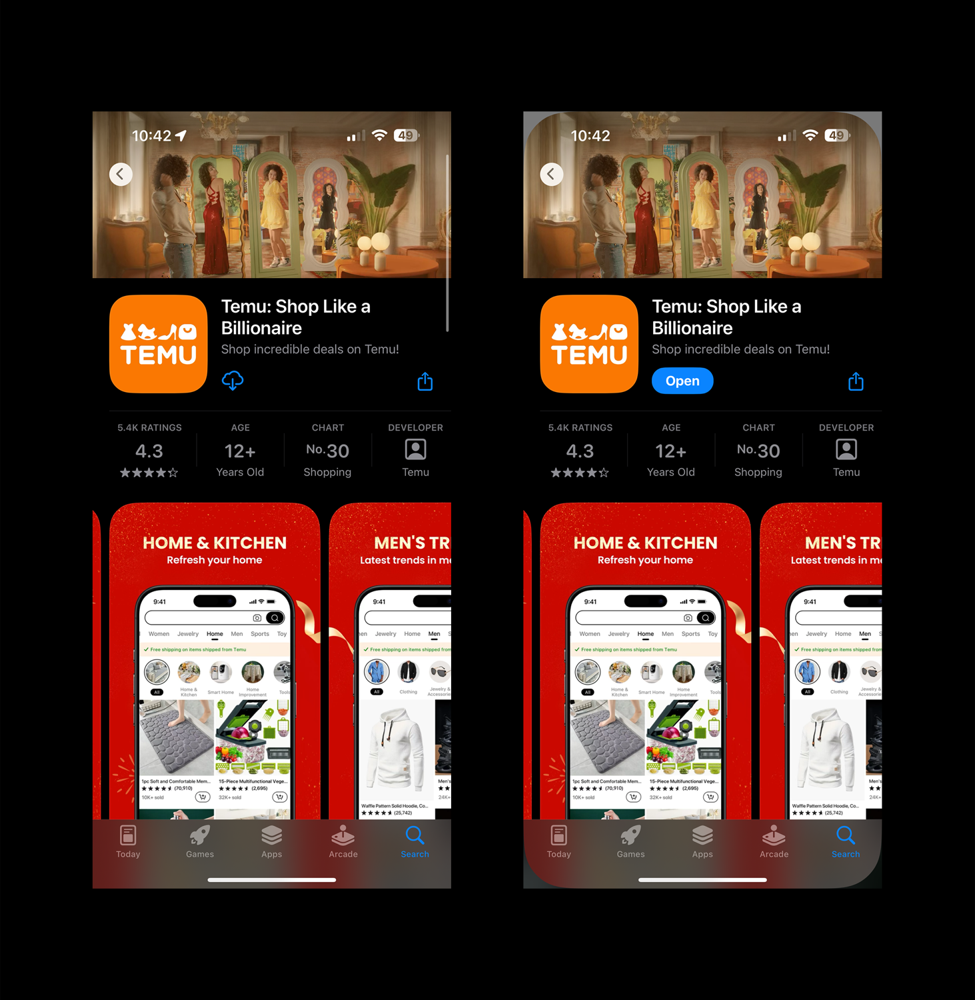
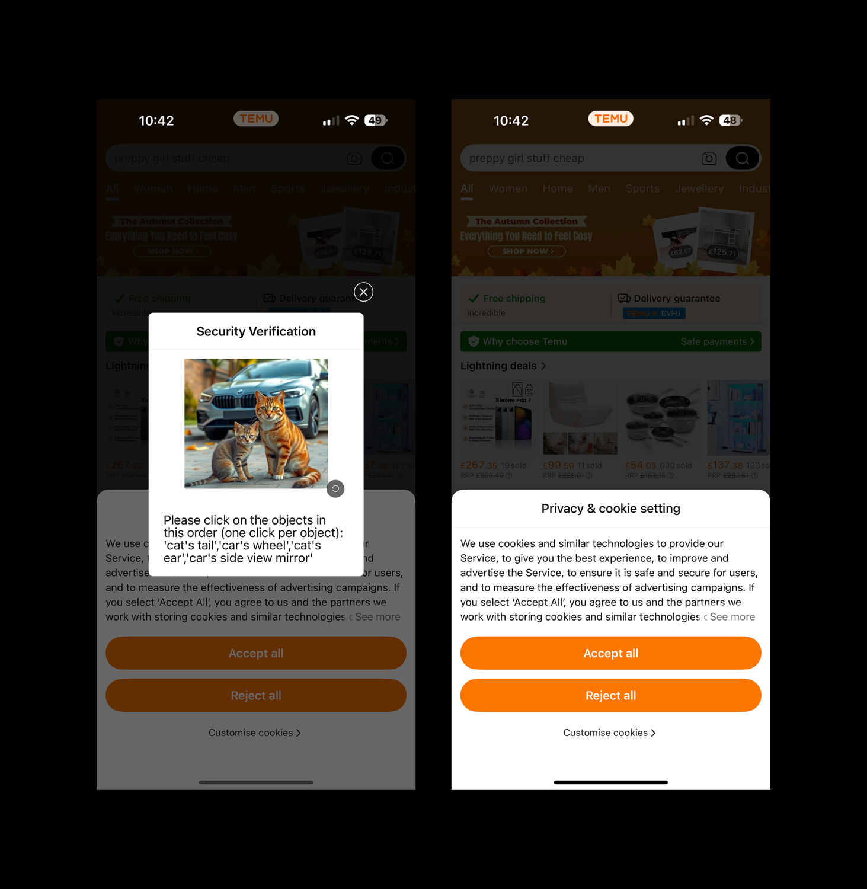
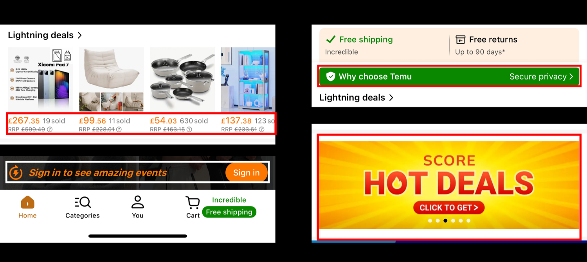
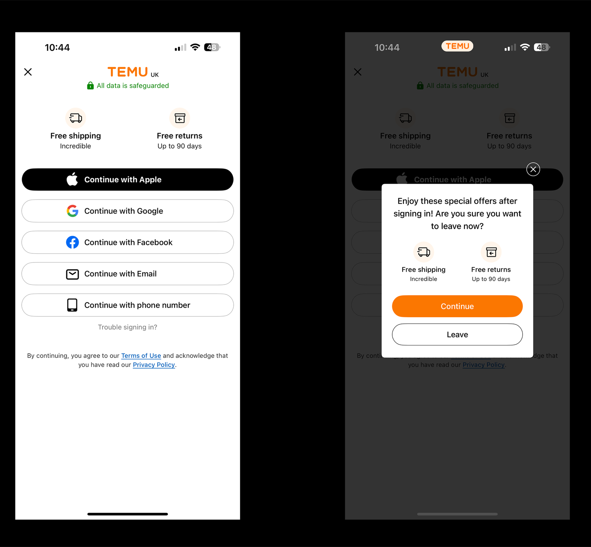
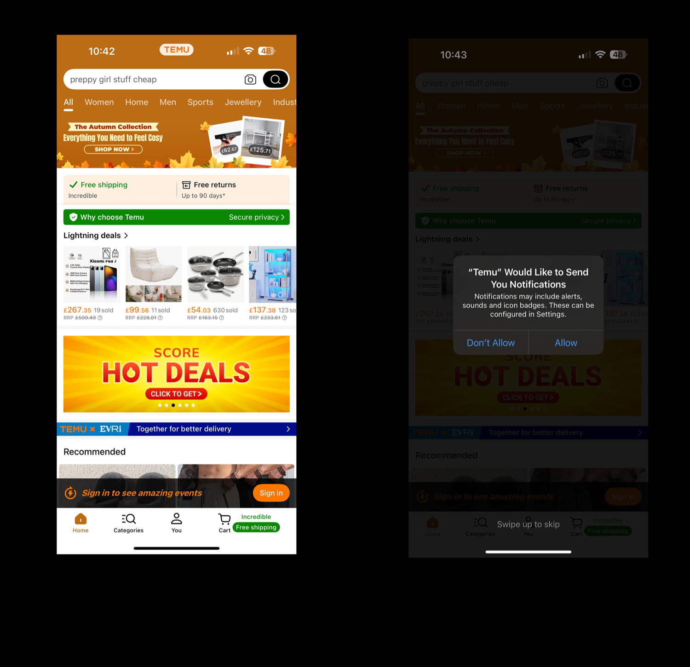
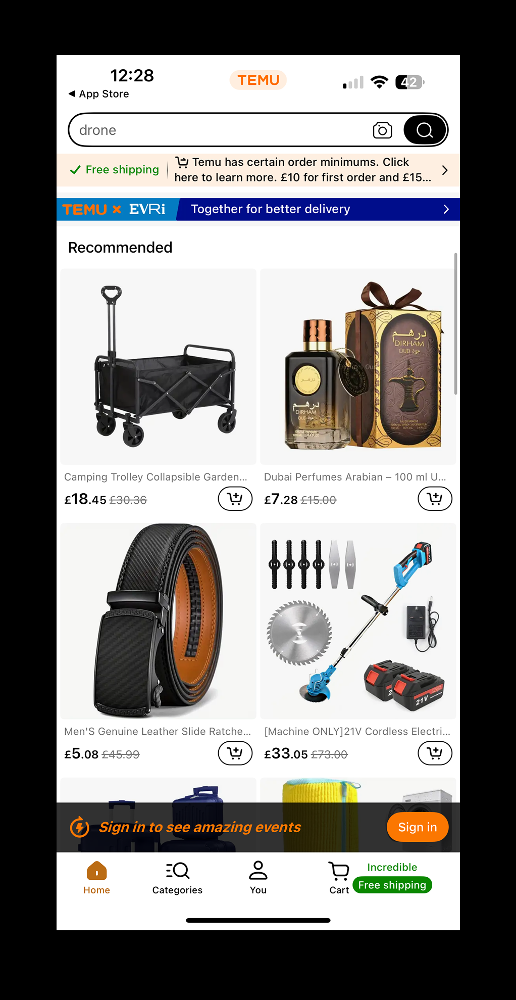
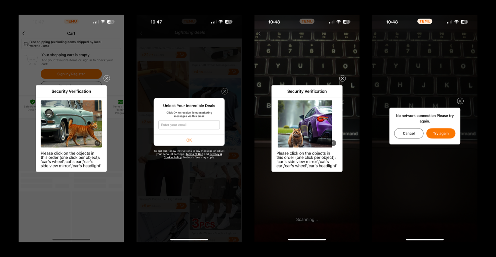
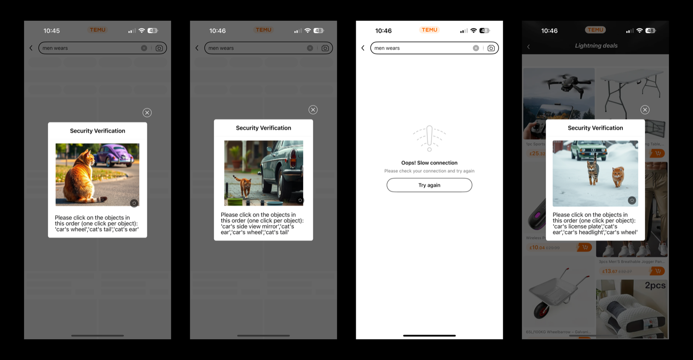

| Role | Associate Product Manager (self-initiated product teardown) |
| Product | Temu, e-commerce marketplace app |
| Focus | First-time user experience, onboarding friction, trust and conversion |
| Method | Hands-on app walkthrough, UX critique, behavioural-psychology analysis |

1. Overview
Temu appeared out of nowhere and climbed to 30th on the App Store. Its slogan promises a billionaire's shopping experience, so I installed it as a brand-new user to see whether the first session delivers on that promise.

2. The Problem
3. What I Found (First-Use Walkthrough)
Overwhelming first impression
The moment the app opens, cookie prompts and a verification step appear. As a first-time user I was unsure what to do next, and the homepage was so crowded that it did not make a good first impression.

Being rushed into buying
Sign-in prompts keep appearing throughout the experience instead of fading away after the first few sessions. The bottom navigation bar is also unstructured: Profile should sit on the far right, matching where the emphasis falls on the sign-in prompt.


- The "Why Choose Temu" section is unnecessary. It raises doubt in a place where an e-commerce app should be building confidence.
- "Hot deals" sits below "Lightning deals", so the two overlap and neither has a clear category of its own.
- Urgency starts at launch. It is like walking into a store and being told by several employees that it closes in 5 minutes.

The minimum-spend notice and the prize wheel
A minimum-spend notification appears when you scroll up. Then a prize wheel shows up that I couldn't screenshot in time. Tapping "Spin" immediately triggers a registration wall, and the verification prompt keeps coming back.


The coupon and search experience
After winning, the voucher is split into several parts for different use cases, with a countdown timer and conditions such as buying over 20 products and spending over $450. The items eligible for the voucher were an unrelated mix (a belt, a trolley, a perfume). Search shows a random assortment of suggested products, and many of them are not available in the Indian region.


4. Key Insights
| Insight | What I observed |
|---|---|
| Regret aversion bias | People want to avoid the pain of a poor decision. Handing over the reward before the sign-up wall would remove the feeling of being misled and would likely improve conversion. |
| Prize wheel feels predictable | It appears that new users are given the top prize, which lifts their mood and makes them more likely to spend more in the first session. Because the reward then needs a very large purchase, the wheel reads as bait rather than a gift. |
| Consumption over need | The six-coupon structure, the countdown timers and the 20-products, $450 condition push spending that does not address a real user need. |
| Urgency erodes trust | Pressure from the first second leaves no room to explore, which is the opposite of the "billionaire" feeling the slogan promises. |
5. Solutions
The solutions focus on restoring user confidence and making the app feel like a trustworthy marketplace rather than a casino.
| Problem | Proposed solution |
|---|---|
| The homepage is overflowing with ads, sales and random products. | Give new users a minimal homepage with a few highlighted deals and clear categories. Surface urgency offers later in the journey and run one strong campaign instead of five. |
| Cookies, sign-in walls and repeated verification appear immediately. | Let visitors browse freely for the first few sessions. Ask for registration only at natural breakpoints such as add-to-cart or checkout. |
| The bottom navigation is disorganised and deal sections are duplicated. | Follow e-commerce conventions: Home, Categories, Cart, Profile (far right). |
| Forced urgency, scarcity and a predictable prize wheel create excitement but also suspicion. | If a wheel is used, make it genuinely random with smaller, believable prizes such as $2 off or free delivery. |
| Random products undermine trust, and search ignores local availability. | Customise product availability by region so users only see relevant, shippable products. |
| Coupons feel like bait and switch, are split into parts, and demand large purchases. | Offer one simple coupon, for example "$10 off a $50 purchase". |
6. The Bigger Strategic Shift
- From manipulation to trust: replace manipulative tactics with open, honest offers.
- From overwhelm to guidance: use curated, personalised experiences instead of offer spam.
- From short-term conversion to long-term loyalty: build repeat business through satisfaction, trust and brand credibility rather than a one-time $450 spend.